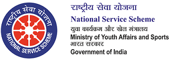

National Service Scheme: A Biography
National Service Scheme is an Indian Government sponsored Public Service Program managed by Ministry of Youth Affairs and Sports of the Central government of India. Popularly known as NSS, it aims at developing students' personality through community service. It is a voluntary association of young people in Colleges, Universities and people working or studying at +2 level for a campus community linkage, especially, villages.
History

After uncountable efforts of the then University Grant Commission (UGC) head S. Radhakrishnan to increase values of service and inculcate national spirit. And hence the then Prime Minister Pt. Nehru considered the scheme. The proposal started from UGC head in 1950 was finally accepted by PMO in 1958 and was finally launched in 1969 after many attempts and trials.
The first orientation was organised at Rajghat and was concluded on 7th June 1969. The final launch was done on 24th September,1969 and the first volunteer chosen was KK Gupta from our own University of Delhi.
First introduced at 37 Universities in India, NSS now is an integral part of every college, university and of many +2 level institutes throughout India.
Symbol, Aim and Motto
The symbol is taken from the Giant Rath Wheel of the very famous Konark Sun Temple. The wheel portrays the cycle of creation, preservation and release. It symbolizes continuity, change and the continuous striving for social change. The eight bars of the wheel represent 24 hours of a day symbolizing that NSS Volunteers are ready to serve 24×7. The red colour represents the young blood of volunteers, full of energy, spirit and ever serving values.
Motto being: Not me but you shows that without any bias NSS volunteers are ready to serve the needy. They don’t think about themselves but about society. They give their time and dedication without thinking about getting anything in return. The selfless service for humanity is the main aim.

NSS Song
Our Message To You
“ Let us serve humanity,And not ask anything in return.”